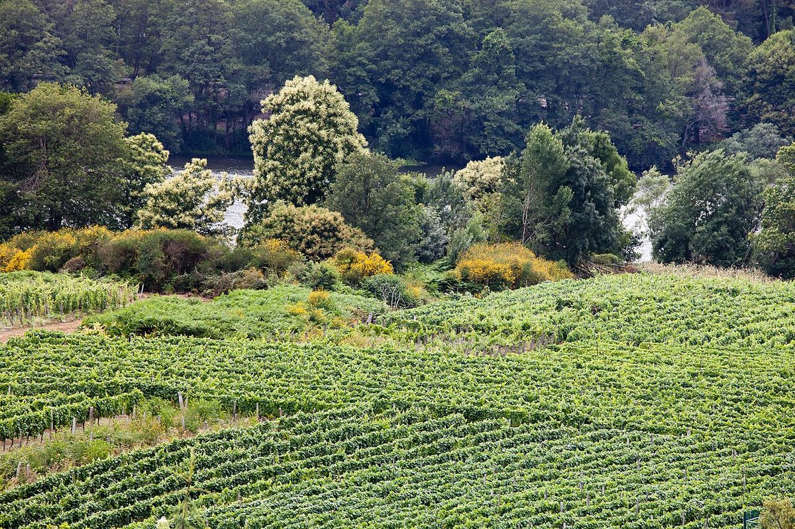

TINTO
Ribeiro, en la provincia de Ourense, es una de las denominaciones de origen más antiguas de Galicia y de España. Sus vinos, sobre todo blancos de Treixadura, se exportaban ya en la Edad Media, y conserva el vino dulce tradicional llamado Tostado.

El Ribeiro es una de las zonas vitícolas de mayor tradición de Galicia. En la Edad Media los monasterios, entre ellos los cistercienses de San Clodio y de Oseira, desarrollaron el viñedo, y la villa de Ribadavia se convirtió en un importante centro comercial. Los vinos del Ribeiro se enviaban por mar a otros puertos europeos, en particular a Inglaterra, y llegaron a tener una notable reputación. Tras la crisis provocada por el oídio y la filoxera en el siglo XIX, muchas viñas se replantaron con variedades productivas como la Palomino y la Garnacha Tintorera. Desde finales del siglo XX la zona ha recuperado sus variedades autóctonas. Es una de las denominaciones de origen más antiguas de España.
La denominación se sitúa en el oeste de la provincia de Ourense, en la confluencia del río Miño con sus afluentes Avia, Arnoia y Barbantiño, en torno a Ribadavia, Leiro, Castrelo de Miño y otros municipios. Los viñedos se cultivan en laderas y bancales de los valles, llamados localmente socalcos. El clima es de transición entre el atlántico y el continental: más cálido y menos lluvioso que la costa gallega, pero con suficiente humedad, con veranos templados o cálidos y una notable oscilación térmica en la época de maduración.
Predominan los suelos de origen granítico, arenosos, ácidos y poco profundos, conocidos en Galicia como xabre, junto a zonas de esquisto y depósitos aluviales en las terrazas próximas a los ríos.
La Treixadura es la variedad blanca principal y aporta aromas de fruta madura, notas florales y buena estructura. Suele combinarse con otras variedades autóctonas como Torrontés, Loureira, Godello, Albariño, Lado y Caíño Blanco, lo que convierte al Ribeiro en tierra de coupages. Entre las tintas se cultivan Caíño Tinto, Sousón, Brancellao, Ferrón y Mencía. La producción se centra en blancos frescos y aromáticos, aunque también se elaboran tintos ligeros y frescos. En las últimas décadas muchos viticultores han sustituido la Palomino, todavía presente en viñedos antiguos, por estas variedades autóctonas, y han recuperado parcelas abandonadas en ladera.
El Tostado es un vino dulce tradicional elaborado con uvas que se dejan pasificar tras la vendimia, a menudo colgadas o extendidas en lugares secos y ventilados, hasta concentrar sus azúcares. El mosto, muy denso, fermenta lentamente y el vino se cría durante largo tiempo antes de su comercialización. Se trata de una elaboración minoritaria, pero con fuerte arraigo en la historia de la comarca.